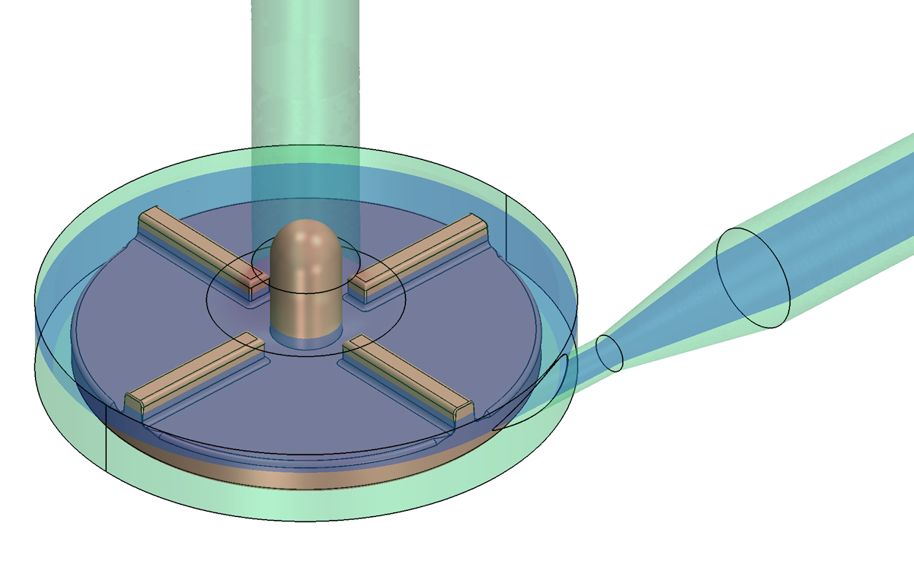
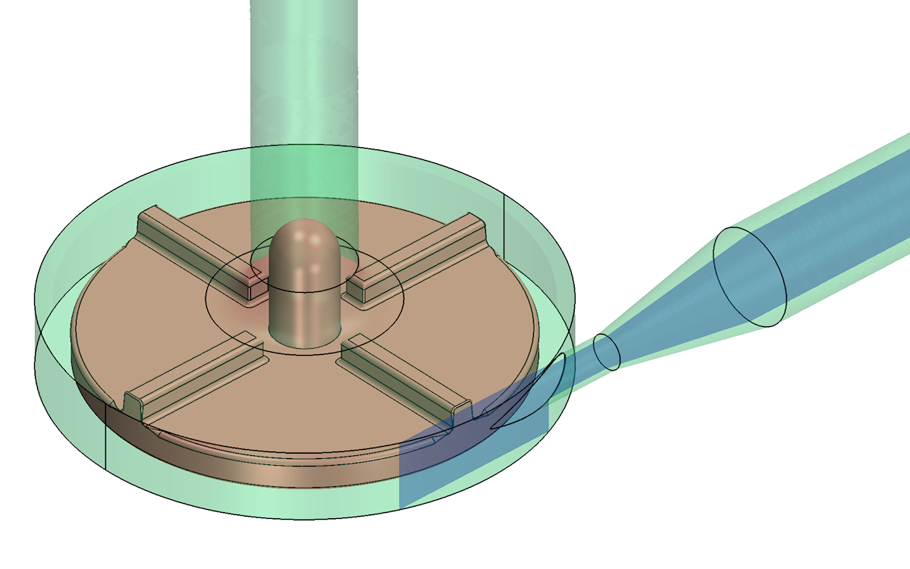
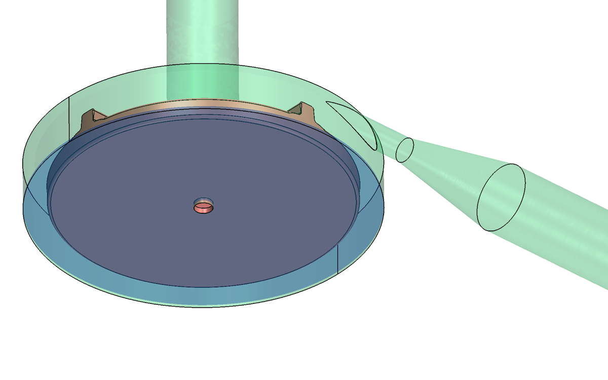
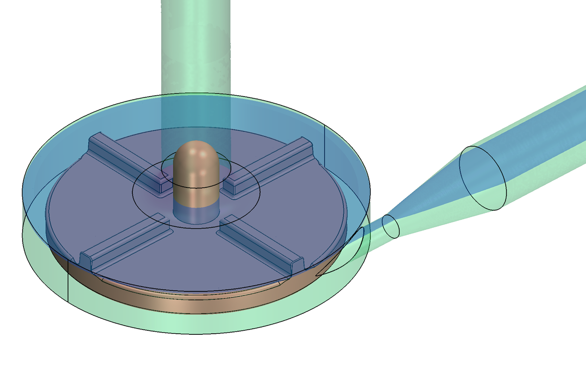
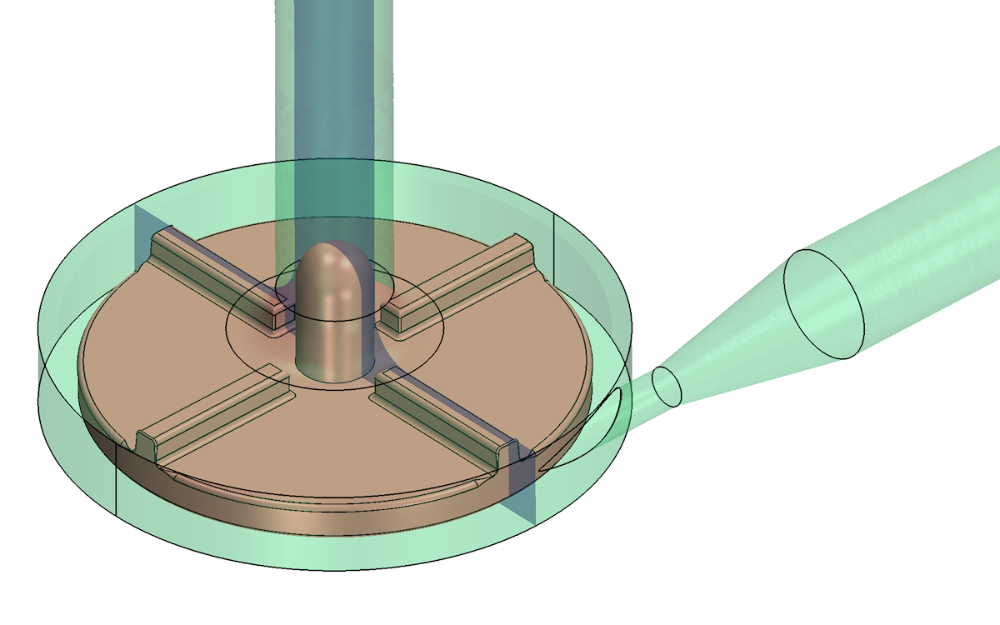

|
|
Cross-Sections
and Surfaces for Interlaboratory Study 2: Blood Pump
Cross-Section Definitions Surfaces
Cross-Section Definitions
- Please provide results data
on the blade passage plane and zx outlet plane, for all pump
conditions.
- Also please provide data
over all the remaining cross-sections – lower gap (beneath the rotor),
upper gap (above the rotor blades), zx inlet plane, and yz inlet plane –
for pump flow rate = 6.0 L/min and pump
speed = 3500 rpm only.
- Please provide this data
with one of the rotor
blades 90° to the outlet (closest to the last time step if the
simulation is performed with unsteady flow).
- Click on the individual
image for a larger view.
|
blade passage plane, z = 0.006562 m
|
all pump conditions
|
|

|
|
zx outlet plane, y = ‑0.027805 m
|
all pump conditions
|
|

|
|
lower gap, z = 0.0005 m
|
6.0 L/min, 3500 rpm only
|
|

|
|
upper gap,
z = 0.0085 m
|
6.0 L/min, 3500 rpm only
|
|

|
|
zx inlet
plane, y = 0.0 m
|
6.0 L/min, 3500 rpm only
|
|
|
|
yz inlet
plane, x = 0.0 m
|
6.0 L/min, 3500 rpm only
|
|

|
Back to Top
Surfaces
- Please extract wall shear stress data and
pressure data on the surfaces defined below, and return the formatted data in ASCII text files.
- Please provide data over all
the surfaces described below for pump
flow rate = 6.0 L/min and pump speed = 3500 RPM only.
- Please provide the data with
one of the rotor
blades 90° to the outlet (closest to the last time step if the
simulation is performed with unsteady flow).
- Surfaces are identified by
the blood pump part:
- Surface 1 is the throat
wall. The surface is a cylinder, truncated by the intersection
with the outlet fillet.
- Surface 2 is the outlet
diffuser wall. The surface is a truncated cone.
- Surface 3 is a 180° section
of the rim of the housing chamber surrounding the outlet. The
surface is a section of a cylinder, except for the hole defined by the
intersection with the throat & outlet fillet.
- Surface 4 is the outlet
fillet, making up the cutwater.
- Surface 5 is the top
surface of the rotor, including blades and rotor rim
- Click on the individual
image for a larger view.
Back to Top
Back to Top
Back To
Interlaboratory Study 2: Blood Pump Information Page
|